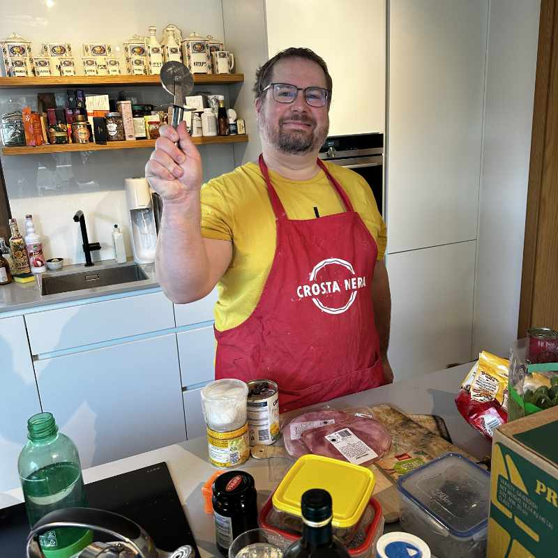
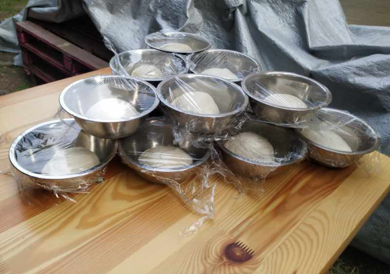
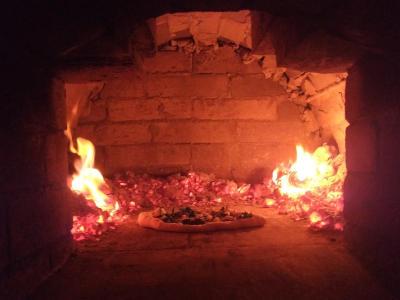
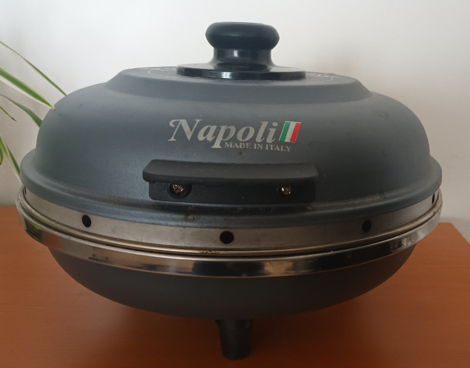

pizzaiolo na návštěvě
Přijedu a upeču čerstvou neapolskou pizzu přímo u tebe — doma, na párty, festivalu i svatbě.
O mně
Vždycky jsem rád pracoval s kynutým těstem. Pak jsem se jednou vydal na kurz pizzy k Frankiemu, naučil se spoustu triků a postupů.
A od té doby jsem do pizzy trošičku blázen.
Peču pizzy na návštěvě u kamarádů, pravidelně na zpívání u osvětlovačů, na narozeninách — pro radost sobě i ostatním. Baví mě zkoušet nové kombinace.


Kde se peče
Jak to těsto upéct? Můžu si přivézt malou elektrickou pícku, ale úplně bude stačit trouba.


Ozvi se
Zatím to neženu komerčně — peču jen pro kamarády (a kamarády kamarádů). Ale třeba se domluvíme, zvlášť když je za tím dobrý příběh.
— Vašek Černý